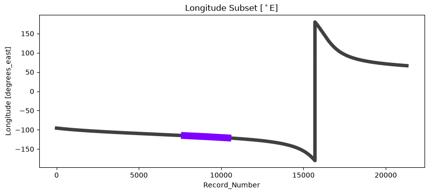

Access Cloud and Aerosol Lidar CALIPSO Data from NASA Earthdata#
CAL_LID_L2_01kmCLay-Standard-V5-00 is the Cloud-Aerosol Lidar and Infrared Pathfinder Satellite Observation (CALIPSO) Lidar Level 2 1 km Cloud Layer data product. This data product was collected using the Cloud-Aerosol Lidar with Orthogonal Polarization (CALIOP) instrument. Within this cloud layer product, generated at a horizontal resolution of 1 km, are two general classes of data: Column Properties (including position data and viewing geometry) and Layer Properties. The cloud layer products consist of a sequence of column descriptors, each associated with a variable number of cloud layer descriptors. Source: NASA Earthdata.
Requirements#
EDL authentication (username/password)
Get
environment.ymlfile and install conda environment to run notebook.pydap>=3.5.9
Objectives#
Subset a remote file#
a) By Variables
b) By Spatial selection
c) Daytime-only data
Subset multiple remote files#
Stream subset of data into local workstation
References#
Getzewich, B. (2025). CALIPSO Lidar Level 2 1 km Cloud Layer, V5-00 [Data set]. NASA Langley Atmospheric Science Data Center Distributed Active Archive Center. https://doi.org/10.5067/CALIOP/CALIPSO/CAL_LID_L2_01KMCLAY-STANDARD-V5-00
import xarray as xr
import datetime as dt
import earthaccess
import matplotlib.pyplot as plt
import numpy as np
# import pydap-specific tools
from pydap.client import get_cmr_urls, open_url
from pydap.client import to_netcdf as dap_to_netcdf
Finding OPeNDAP URLs#
Query opendap urls using NASA’s CMR API#
We query NASA’s CMR to identify remote files that intersect the following geographical area (bounding box) covering the following time range
-121 < longitude < -115, and 26.5 < latitude < 31
2 years of only spring time data: March 1st to May 31st (2022-2023).
Lasly, we are ONLY interested in Daytime data.
Calipso_L2_ccid = "C3463063995-LARC_CLOUD" #
bbox = [-121,26.5,-115,31] # [west, south, east, north]
# 2 years of March data
time_ranges = [[dt.datetime(year, 3, 1), dt.datetime(year, 5, 31)] for year in range(2022, 2024)]
CMR_URLs = []
args = {
"ccid": Calipso_L2_ccid,
"bounding_box": bbox,
"limit": 1000,
}
cmr_urls = [url for time_range in time_ranges for url in get_cmr_urls(**args, time_range=time_range)] # you can increase the limit of results
print("################################################ \n We found a total of ", len(cmr_urls), "OPeNDAP URLS!!!\n################################################")
################################################
We found a total of 90 OPeNDAP URLS!!!
################################################
EDL Authentication via earthaccess and OPeNDAP#
You can authenticate via earthaccess as demonstrated below. You must have a valid EDL account. There are two strategies for authenticating with earthaccess:
strategy="interactive". This will promt your edl username-password.strategy="netrc". Use this if the notebook is running on an environment where a.netrcwith your credentials is recoverable. T
Below the default will be netrc, assuming the user has executed the notebook Authenticate.ipynb. If not, you can change the strategy to "interactive".
from earthaccess.exceptions import LoginStrategyUnavailable
try:
auth = earthaccess.login(strategy="netrc", persist=True) # you will be promted to add your EDL credentials
except LoginStrategyUnavailable:
auth = earthaccess.login(strategy="interactive", persist=True)
# pass Token Authorization to a new Session.
my_session = session=auth.get_session()
Accessing Metadata-ONLY with PyDAP#
We can access OPeNDAP-produced metadata to identify the variables of interest. In particular those associated with latitude and longitude values
%%time
pyds = open_url(cmr_urls[0], protocol="dap4", session=my_session)
pyds.tree()
.CAL_LID_L2_01kmCLay-Standard-V5-00.2022-03-02T10-34-17ZN.hdf
├──Lidar_Surface_Detection
│ ├──Surface_Top_Altitude_532
│ ├──Surface_Base_Altitude_532
│ ├──Surface_Integrated_Attenuated_Backscatter_532
│ ├──Surface_532_Integrated_Depolarization_Ratio
│ ├──Surface_532_Integrated_Attenuated_Color_Ratio
│ ├──Surface_Detection_Flags_532
│ ├──Surface_Overlying_Integrated_Attenuated_Backscatter_532
│ ├──Surface_Scaled_RMS_Background_532
│ ├──Surface_Peak_Signal_532
│ ├──Surface_Detections_333m_532
│ ├──Surface_Top_Altitude_1064
│ ├──Surface_Base_Altitude_1064
│ ├──Surface_Integrated_Attenuated_Backscatter_1064
│ ├──Surface_1064_Integrated_Depolarization_Ratio
│ ├──Surface_1064_Integrated_Attenuated_Color_Ratio
│ ├──Surface_Detection_Flags_1064
│ ├──Surface_Overlying_Integrated_Attenuated_Backscatter_1064
│ ├──Surface_Scaled_RMS_Background_1064
│ ├──Surface_Peak_Signal_1064
│ └──Surface_Detections_333m_1064
├──Ocean_Derived_Column_Optical_Depth
│ ├──ODCOD_Effective_Optical_Depth_532
│ ├──ODCOD_Effective_Optical_Depth_532_Uncertainty
│ ├──ODCOD_QC_Flag_532
│ ├──ODCOD_Surface_Wind_Speeds_10m
│ └──ODCOD_Surface_Wind_Speed_Correction
├──Lidar_Data_Altitudes
├──Profile_ID
├──Latitude
├──Longitude
├──Profile_Time
├──Profile_UTC_Time
├──Day_Night_Flag
├──Off_Nadir_Angle
├──Solar_Zenith_Angle
├──Solar_Azimuth_Angle
├──Scattering_Angle
├──Spacecraft_Position
├──Parallel_Column_Reflectance_532
├──Parallel_Column_Reflectance_Uncertainty_532
├──Perpendicular_Column_Reflectance_532
├──Perpendicular_Column_Reflectance_Uncertainty_532
├──Column_Integrated_Attenuated_Backscatter_532
├──Column_IAB_Cumulative_Probability
├──Column_Particulate_Optical_Depth_Above_Opaque_Water_Cloud_532
├──Column_Particulate_Optical_Depth_Above_Opaque_Water_Cloud_Uncertainty_532
├──Tropopause_Height
├──Tropopause_Temperature
├──IGBP_Surface_Type
├──Snow_Ice_Surface_Type
├──DEM_Surface_Elevation
├──Minimum_Laser_Energy_532
├──Low_Energy_Mitigation_Column_QC_Flag
├──Number_Layers_Found
├──Scene_Flag
├──Low_Energy_Mitigation_Feature_QC_Flag
├──Layer_Top_Altitude
├──Layer_Base_Altitude
├──Layer_Top_Pressure
├──Midlayer_Pressure
├──Layer_Base_Pressure
├──Layer_Top_Temperature
├──Layer_Centroid_Temperature
├──Midlayer_Temperature
├──Layer_Base_Temperature
├──Opacity_Flag
├──Attenuated_Scattering_Ratio_Statistics_532
├──Attenuated_Backscatter_Statistics_532
├──Integrated_Attenuated_Backscatter_532
├──Integrated_Attenuated_Backscatter_Uncertainty_532
├──Attenuated_Backscatter_Statistics_1064
├──Integrated_Attenuated_Backscatter_1064
├──Integrated_Attenuated_Backscatter_Uncertainty_1064
├──Volume_Depolarization_Ratio_Statistics
├──Integrated_Volume_Depolarization_Ratio
├──Integrated_Volume_Depolarization_Ratio_Uncertainty
├──Attenuated_Total_Color_Ratio_Statistics
├──Integrated_Attenuated_Total_Color_Ratio
├──Integrated_Attenuated_Total_Color_Ratio_Uncertainty
├──Overlying_Integrated_Attenuated_Backscatter_532
├──Layer_IAB_QA_Factor
├──Feature_Classification_Flags
├──CAD_Score
├──Initial_CAD_Score
├──metadata.Product_ID
├──metadata.Date_Time_at_Granule_Start
├──metadata.Date_Time_at_Granule_End
├──metadata.Date_Time_of_Production
├──metadata.Number_of_Good_Profiles
├──metadata.Number_of_Bad_Profiles
├──metadata.Initial_Subsatellite_Latitude
├──metadata.Initial_Subsatellite_Longitude
├──metadata.Final_Subsatellite_Latitude
├──metadata.Final_Subsatellite_Longitude
├──metadata.Orbit_Number_at_Granule_Start
├──metadata.Orbit_Number_at_Granule_End
├──metadata.Orbit_Number_Change_Time
├──metadata.Path_Number_at_Granule_Start
├──metadata.Path_Number_at_Granule_End
├──metadata.Path_Number_Change_Time
├──metadata.Lidar_L1_Production_Date_Time
├──metadata.Number_of_Single_Shot_Records_in_File
├──metadata.Number_of_Average_Records_in_File
├──metadata.Number_of_Features_Found
├──metadata.Number_of_Cloud_Features_Found
├──metadata.Number_of_Aerosol_Features_Found
├──metadata.Number_of_Indeterminate_Features_Found
├──metadata.Ocean_Fresnel_Reflection_Coefficient_532
├──metadata.MERRA2_Wind_Uncertainty
├──metadata.AMSR_Wind_Correction_Uncertainty
├──metadata.Lidar_Data_Altitudes
├──metadata.GEOS_Version
├──metadata.GMAO_Files_Used
├──metadata.Classifier_Coefficients_Version_Number
├──metadata.Classifier_Coefficients_Version_Date
└──metadata.Production_Script
CPU times: user 129 ms, sys: 4.93 ms, total: 134 ms
Wall time: 547 ms
Download minimal variables to identify spatial subset and daytime data#
Coordinates are (fully qualifying names):
LatitudeLongitudeDay_Night_Flag
Before donwloading, we need to idenfity any dimension that is also an array of the dataset
(There can also be Named dimensions, i.e. dimensions that are only named and that are NOT
associated with any data. We do not need to declare those Variables)
DIMS = list(set(pyds['Latitude'].dims + pyds['Longitude'].dims + pyds['Day_Night_Flag'].dims))
dims = [dim for dim in DIMS if dim.split("/")[-1] in pyds[("/").join(DIMS[1].split('/')[:-1])].variables()]
print("Dimensions that are also arrays: ", dims)
Dimensions that are also arrays: []
output_path = "./data/"
Stream data#
%%time
dap_to_netcdf(cmr_urls, session=my_session,
keep_variables = ["/Longitude", "/Day_Night_Flag"],
output_path=output_path)
CPU times: user 138 ms, sys: 238 ms, total: 376 ms
Wall time: 15.7 s
Inspect all downloaded files#
Here, we further identify the subset of data needed on the remote file, that will return ONLY data within our bounding box, for any possible variable of interest.
# Get data from Bounding Box
minLon, maxLon = bbox[0], bbox[2]
slices=[]
final_urls = []
for url in cmr_urls:
filename = output_path+f"{url.split('/')[-1][:-4]}.nc4"
dt1 = xr.open_datatree(filename).load()
daytime_flag = dt1['Day_Night_Flag']
# find index /data_01/longitude
longitude = dt1['/Longitude']
mask = (longitude >= minLon) & (longitude <= maxLon)
idx = np.nonzero(mask.values)[0]
daytime_flag = dt1['Day_Night_Flag'].isel(Record_Number=slice(idx[0], idx[-1]))==1
if all(daytime_flag==0):
final_urls.append(url)
slices.append({"/Record_Number":(idx[0], idx[-1])})
print(f"\nOnly {len(final_urls)} out of the {len(cmr_urls)} remote files satisfy our Daylight Criteria\n")
print("Sample subsetting slices:")
slices[:4]
Only 42 out of the 90 remote files satisfy our Daylight Criteria
Sample subsetting slices:
[{'/Record_Number': (np.int64(11471), np.int64(14314))},
{'/Record_Number': (np.int64(14165), np.int64(16225))},
{'/Record_Number': (np.int64(12422), np.int64(14979))},
{'/Record_Number': (np.int64(10329), np.int64(13187))}]
Inspect Visually the slice to subset#
# Subset data
Lon = dt1['Longitude'].isel(Record_Number=slice(idx[0], idx[-1]))
# Generate masked data to visualize only
Lon_masked = xr.full_like(dt1['Longitude'], np.nan)
Lon_masked.loc[dict(
Record_Number = Lon['Record_Number'] + idx[0]
)] = Lon
# Visualize: Plot subset of data over original data
fig, axes = plt.subplots(figsize=(10,4))
dt1['Longitude'].plot(lw=5, color='k', alpha=0.75);
Lon_masked.plot(lw=10, color="#7f00ff")
axes.set_title(r"Longitude Subset $[^\circ$E]")
plt.show()

Download all data of interest#
FIRST: We need to erase all previously downloaded files, to avoid filename collision
import os
import glob
fnames = [output_path+f"{fname.split('/')[-1][:-4]}.nc4" for fname in cmr_urls]
for filename in fnames:
try:
os.remove(filename)
except FileNotFoundError:
print(f"The file '{filename}' is not in there anymore")
# Will Download 34 Variables!
keep_variables = [
'/Lidar_Surface_Detection', # <----- ALL Variables inside Group
"/Ocean_Derived_Column_Optical_Depth", # < -- All varibles inside Group
"/Lidar_Data_Altitudes", "/Profile_ID", "/Latitude", "/Longitude",
"/Profile_Time", "/Profile_UTC_Time", "/Day_Night_Flag", "/Tropopause_Height",
"/Tropopause_Temperature",
]
%%time
dap_to_netcdf(final_urls, session=my_session,
keep_variables = keep_variables,
dim_slices = slices,
output_path=output_path)
CPU times: user 83.3 ms, sys: 259 ms, total: 343 ms
Wall time: 52.9 s
Inspect a downloaded (local) file#
NOTE: File inherits the source filename via the OPeNDAP metadata. We can retrieve the source filename from each URL
filename = output_path+f"{final_urls[0].split('/')[-1][:-4]}.nc4"
dt1 = xr.open_datatree(filename).load()
dt1
<xarray.DataTree>
Group: /
│ Dimensions: (Record_Number: 2843, Sample: 1,
│ Altitude_Record_Number: 1,
│ Lidar_Data_Altitudes: 583)
│ Coordinates:
│ Lidar_Data_Altitudes (Altitude_Record_Number, Lidar_Data_Altitudes) float32 2kB ...
│ Dimensions without coordinates: Record_Number, Sample, Altitude_Record_Number
│ Data variables:
│ Profile_ID (Record_Number, Sample) int32 11kB 93378 ... 101904
│ Latitude (Record_Number, Sample) float32 11kB 5.639 ... 31.24
│ Longitude (Record_Number, Sample) float32 11kB -115.0 ... -...
│ Profile_Time (Record_Number, Sample) float64 23kB 9.205e+08 .....
│ Profile_UTC_Time (Record_Number, Sample) float64 23kB 2.203e+05 .....
│ Day_Night_Flag (Record_Number, Sample) int8 3kB 0 0 0 0 ... 0 0 0 0
│ Tropopause_Height (Record_Number, Sample) float32 11kB 16.65 ... 14.4
│ Tropopause_Temperature (Record_Number, Sample) float32 11kB -78.8 ... -5...
│ Attributes:
│ coremetadata: \nGROUP = INVENTORYMETADATA\n GROUPTY...
│ archivemetadata: \nGROUP = ARCHIVEDMETADATA\n GROUPTYP...
├── Group: /Lidar_Surface_Detection
│ Dimensions: (
│ Record_Number: 2843,
│ Sample: 1)
│ Dimensions without coordinates: Record_Number, Sample
│ Data variables: (12/20)
│ Surface_Top_Altitude_532 (Record_Number, Sample) float32 11kB ...
│ Surface_Base_Altitude_532 (Record_Number, Sample) float32 11kB ...
│ Surface_Integrated_Attenuated_Backscatter_532 (Record_Number, Sample) float32 11kB ...
│ Surface_532_Integrated_Depolarization_Ratio (Record_Number, Sample) float32 11kB ...
│ Surface_532_Integrated_Attenuated_Color_Ratio (Record_Number, Sample) float32 11kB ...
│ Surface_Detection_Flags_532 (Record_Number, Sample) float32 11kB ...
│ ... ...
│ Surface_1064_Integrated_Attenuated_Color_Ratio (Record_Number, Sample) float32 11kB ...
│ Surface_Detection_Flags_1064 (Record_Number, Sample) float32 11kB ...
│ Surface_Overlying_Integrated_Attenuated_Backscatter_1064 (Record_Number, Sample) float32 11kB ...
│ Surface_Scaled_RMS_Background_1064 (Record_Number, Sample) float32 11kB ...
│ Surface_Peak_Signal_1064 (Record_Number, Sample) float32 11kB ...
│ Surface_Detections_333m_1064 (Record_Number, Sample) float32 11kB ...
└── Group: /Ocean_Derived_Column_Optical_Depth
Dimensions: (Record_Number: 2843,
Sample: 1, Directions: 2)
Dimensions without coordinates: Record_Number, Sample, Directions
Data variables:
ODCOD_Effective_Optical_Depth_532 (Record_Number, Sample) float32 11kB ...
ODCOD_Effective_Optical_Depth_532_Uncertainty (Record_Number, Sample) float32 11kB ...
ODCOD_QC_Flag_532 (Record_Number, Sample) float64 23kB ...
ODCOD_Surface_Wind_Speeds_10m (Record_Number, Directions) float32 23kB ...
ODCOD_Surface_Wind_Speed_Correction (Record_Number, Sample) float32 11kB ...